From Nilabadi to the coast: where to build a house, and where to buy an apartment
An open-data suitability study of an ellipse that runs from Nilabadi village (Koraput, Odisha) down to the Bay of Bengal, with central Visakhapatnam as its second focus. It reaches up to 300 km end to end. It has two separate tracks: Plot for building a house, which scores land across the whole ellipse, and Apartment, which ranks urban and peri-urban localities in and around Visakhapatnam.
Foci: Nilabadi 18.954 N, 83.273 E · Visakhapatnam (Dwaraka Bus Station) 17.724 N, 83.307 E · major axis 300 km · 250 m grid · 45,580 km² of land scored
The ellipse is mostly hills, forest and sea. It covers 63,024 km², of which about 17,445 km² is sea. Of the 45,580 km² of land, only 15,470 km² (34%) passes every exclusion rule (slope, forest, water, roads, the CRZ proxy).
Plot track: the best land lies in the coastal plain between Vizag, Vizianagaram and Srikakulam, and around Anakapalli. The top zone is on the edge of Vizianagaram town at Dharmapuri (88.5), then the Rayagada town edge (85.1) and Anakapalli (84.2). Eleven of the 15 zones are in Andhra Pradesh plains mandals that are not on the published Scheduled mandal lists. The four Odisha zones are in fully Scheduled districts.
Close to Nilabadi: the earlier 50 km study still holds for anyone who wants to stay near the village. Rayagada and Parvathipuram lead there (see the 50 km results).
Apartment track: central, well-served localities on higher ground score best: Akkayyapalem, Seethammadhara and Dwaraka Nagar, then Arilova and Marripalem on the BRTS. The NH16/IT corridor (Yendada, PM Palem, Madhurawada) is cheaper per sq ft and close to IT jobs, but sits farther from the centre and has drainage still being built.
Coast: the whole coast is in the BMTPC Very High wind-damage zone (50 m/s). Land within 2 km of the sea gets the largest cyclone penalty, and land within 500 m is excluded as a CRZ proxy.
This is a screening study, not a plot or project finder. Check land records, Scheduled status, CRZ, flood levels and AP RERA before any decision.
Study area
Why an ellipse, and how it was drawn
The first version of this report looked at a 50 km circle around Nilabadi. This version reaches the coast. An ellipse with one focus at Nilabadi and the other in central Visakhapatnam covers both places and the corridor between them, and every point inside it has a combined distance to the two foci of at most 300 km. Along its axis it reaches a − c ≈ 82 km beyond each focus: north of Nilabadi into the Rayagada and Kalahandi uplands, and south of Vizag over the sea, which is masked out. Across the axis it is about 134 km wide on each side, which takes in the coast from Srikakulam to beyond Anakapalli.
Visakhapatnam city centre, taken as the APSRTC Dwaraka Bus Station (RTC Complex, Dwaraka Nagar), 17.7239 N, 83.3069 E (OSM way 1389843166, centroid)
Distance between foci
136.24 km (geodesic, WGS84), so c = 68.12 km
Semi-major axis a
150 km (major axis 300 km)
Semi-minor axis b
√(a² − c²) = 133.64 km
Centre and orientation
18.339 N, 83.290 E; the major axis runs along the line between the foci, at an azimuth of about 178.5° (almost due south)
Membership test
a cell is inside if its geodesic distance to Nilabadi plus its distance to the Vizag point is 300 km or less
Area
63,024 km² in total; 45,580 km² of land after removing the sea
Sea mask
The OSM coastline, drawn at 50 m as a barrier and flood-filled from the open sea
Interactive map
Suitability map
Coral circles are plot zones, navy squares are apartment localities. Use the layer control to switch the base map and to show the earlier 50 km layer. All markers show general areas, not plots or projects.
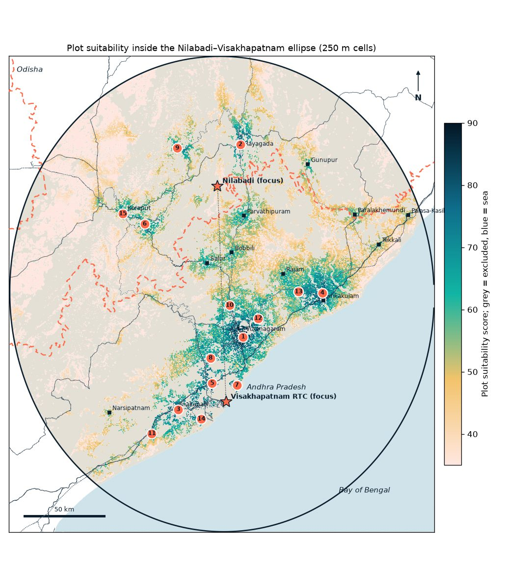
Plot suitability per 250 m cell. Grey = excluded, blue = sea. Black outline = study ellipse; dotted line = axis between the foci; dashed coral = Odisha / Andhra Pradesh border; grey lines = trunk roads; dotted = railways.
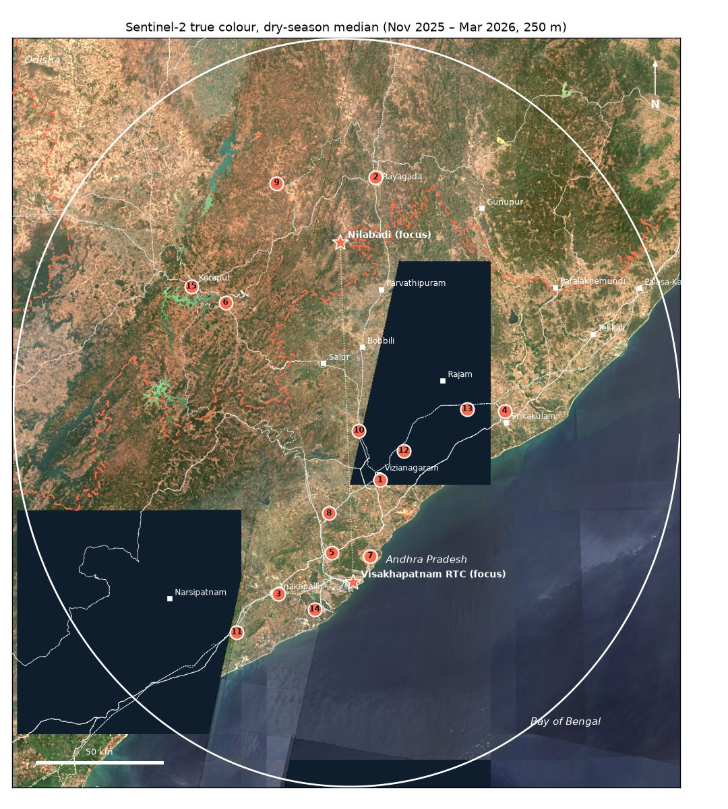
Sentinel-2 dry-season median, Nov 2025 – Mar 2026, at 250 m.
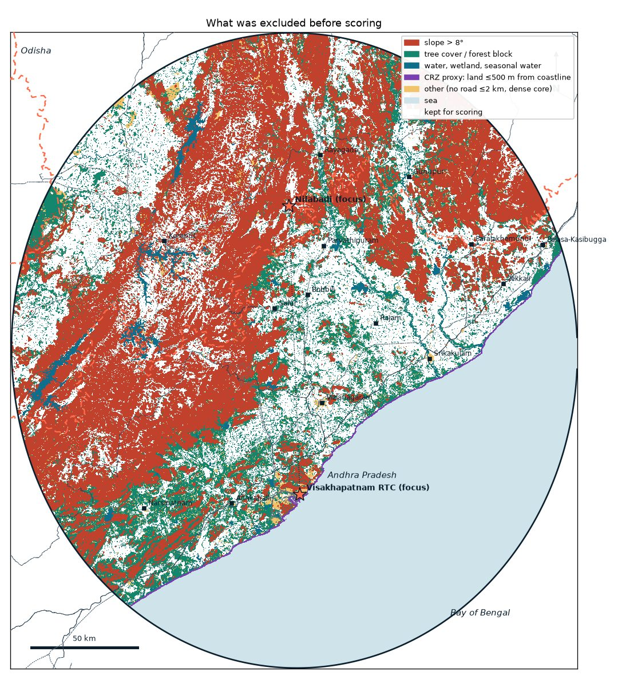
What was removed before scoring, and why.
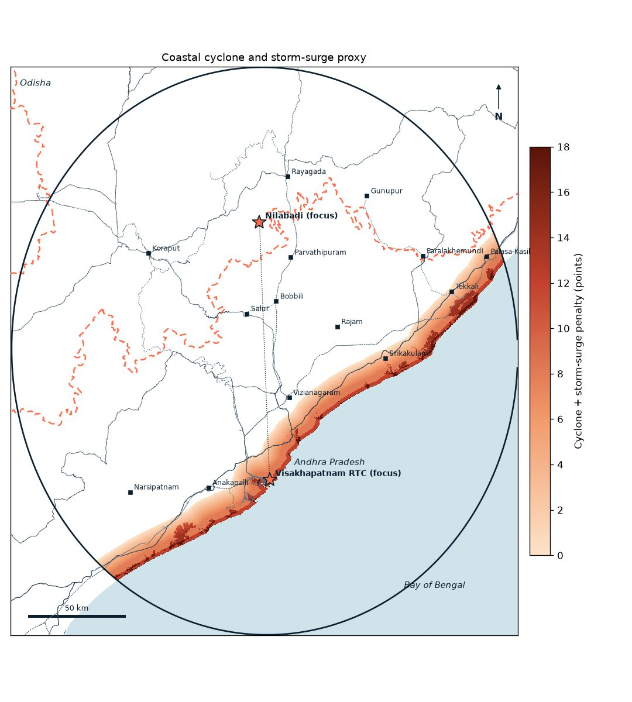
The cyclone and storm-surge proxy used as a penalty.
Track 1
Plot for building a house: 15 zones in the ellipse
Land was scored on slope, roads, towns, demand and jobs, nearby settlement, services, rail and distance to either focus, with penalties for flood, cyclone and storm-surge exposure. Zones are at least 15 km apart. Centroids are rounded to 3 decimals (about 100 m) and mark general areas, not plots. Distances are straight-line.
#
Zone (nearest place; mandal, district)
State
Score
Approx. centroid
From Nilabadi km
From Vizag centre km
Coast km
Major road km
Station km
Slope °
Cyclone + surge
Scheduled Area
1
Dharmapuri Vizianagaram Mandal, Vizianagaram District
"Not listed" means the mandal is not on the published ITDA or Scheduled mandal lists used here. Single villages inside such mandals can still be Scheduled, so always check the village. Cyclone + surge is the penalty in points (see the method).
For a house near the village, the earlier 50 km circle at 100 m resolution is the better guide, because it used finer cells, Nilabadi-specific towns and drive times. Its ranking is unchanged:
#
Zone
State
Score (50 km model)
Approx. centroid
From Nilabadi km
Drive km (OSRM)
Major road km
Nearest station
Slope °
1
Belagam Agraharam
AP
95.1
18.767, 83.421
26.0 SE
31.9
0.1
Parvatipuram 0.8 km
1.4
2
Sai Priya Nagar
Odisha
94.1
19.188, 83.410
29.6 NE
50.1
0.6
Rayagada 1.4 km
0.9
3
Beheraguda
Odisha
88.1
19.125, 83.413
24.0 NE
52.0
0.2
Ladda 2.4 km
2.2
4
Gangareguvalasa
AP
87.2
18.852, 83.456
22.4 SE
42.6
0.2
Gumada 3.9 km
1.8
5
Sivandravalasa
AP
82.5
18.826, 83.395
19.2 SE
28.5
0.8
Parvatipuram Town 6.2 km
2.2
6
Amalabhata
Odisha
82.2
19.252, 83.430
36.9 NE
57.4
0.1
Singapur Road Junction 3.0 km
2.4
7
Putturu
AP
81.9
18.738, 83.361
25.7 S
32.7
0.2
Narsipuram Halt 4.9 km
1.6
8
Kuli
Odisha
75.4
19.204, 83.474
34.9 NE
67.2
0.3
Rayagada 7.4 km
2.5
9
Kandhajimidi
Odisha
75.0
19.044, 83.422
18.6 NE
42.3
0.3
Jimidipeta 0.1 km
2.1
10
Lakshmipur
Odisha
74.0
18.991, 83.113
17.3 W
42.5
0.1
Lakshmipur Road 1.6 km
3.5
—
Nilabadi (village centroid, benchmark)
Odisha
63.4
18.954, 83.273
0
—
2.4
Kuneru 17.6 km
3.1
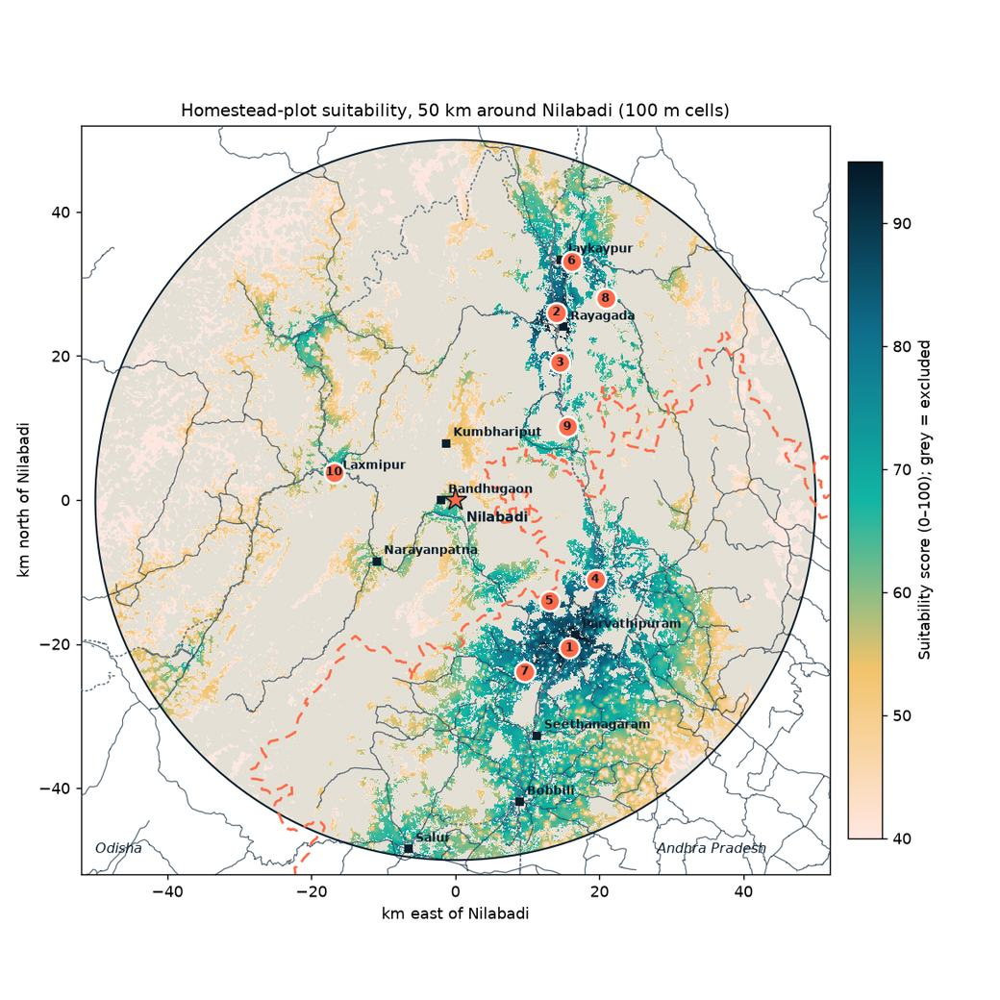
50 km circle, 100 m cells (earlier model).Show the ten 50 km zone cards
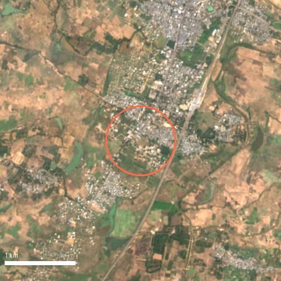
1. Belagam Agraharam
score 95.1 (50 km model)
+ Highest score; on the edge of Parvathipuram town, 0.8 km from Parvatipuram station; flat (1.4°); school and health facility within ~300 m
− Andhra Pradesh jurisdiction (Meebhoomi records, AP land rules, partly Scheduled district); peri-urban asking prices; already 27% built-up, so open infill land is limited
Sentinel-2 L2A, 2026-01-14.
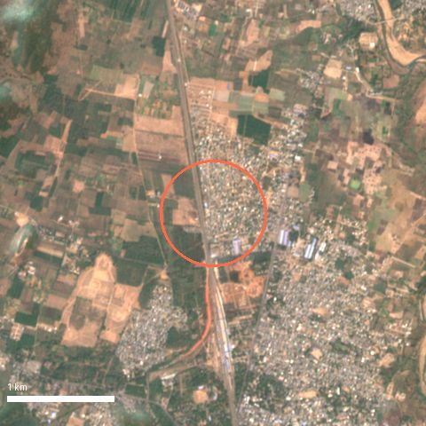
2. Sai Priya Nagar
score 94.1 (50 km model)
+ Rayagada district HQ edge; station 1.4 km; flattest zone (0.9°); deepest rental and services market in the circle
− Town-level plot prices; longest drive from Nilabadi of the top three (≈50 km, ≈57 min); check municipal / development-authority layout approval
Sentinel-2 L2A, 2026-01-26.
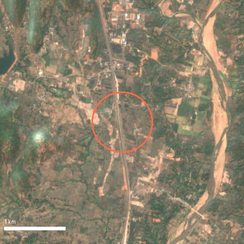
3. Beheraguda
score 88.1 (50 km model)
+ On a major road (0.2 km), 5 km from Rayagada; Ladda station 2.4 km; mostly cropland so low clearing cost
− Nagavali river runs ~1–2 km east (see thumbnail): confirm high-flood level on site; farmland usually needs kisam conversion before building
Sentinel-2 L2A, 2026-01-26.
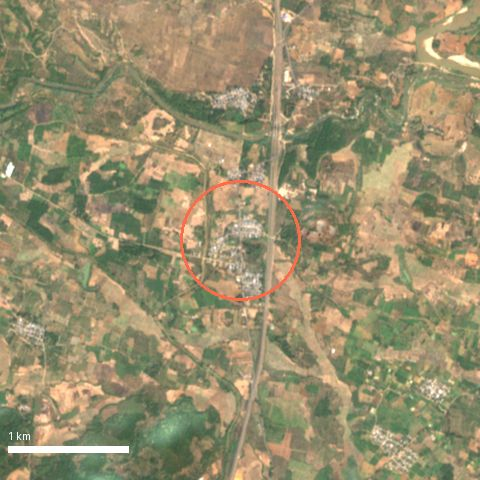
4. Gangareguvalasa
score 87.2 (50 km model)
+ Major road 0.2 km; Gumada station 3.9 km; gentle slope (1.8°); between Parvathipuram and the Odisha border
− Andhra Pradesh jurisdiction; 8 km to Parvathipuram; 35% tree cover in the zone
Sentinel-2 L2A, 2026-01-14.
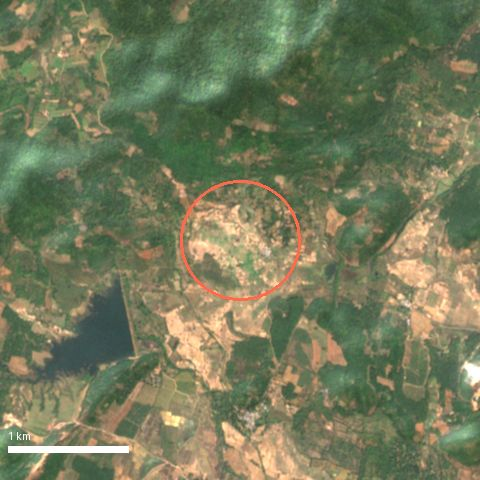
5. Sivandravalasa
score 82.5 (50 km model)
+ Shortest drive from Nilabadi of the AP zones (≈28.5 km, ≈32 min); 75% open cropland
− Andhra Pradesh jurisdiction; mostly agricultural land (conversion needed); 6 km to a major town
Sentinel-2 L2A, 2026-01-14.
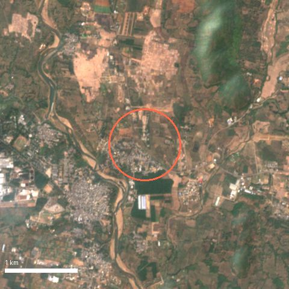
6. Amalabhata
score 82.2 (50 km model)
+ Near the JK Paper complex at Jaykaypur (industrial jobs = rental demand); major road 0.1 km; Singapur Road Jn station 3 km
− Check industrial air, water and truck traffic; ≈57 km / ≈61 min drive from Nilabadi
Sentinel-2 L2A, 2026-01-26.
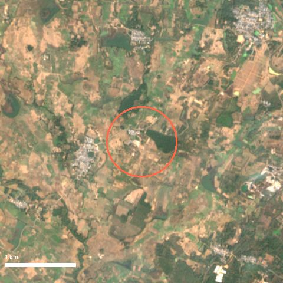
7. Putturu
score 81.9 (50 km model)
+ Largest contiguous high-score zone (≈464 ha); major road 0.2 km; flat cropland
− Andhra Pradesh jurisdiction; 8.6 km to a major town; farmland conversion needed
Sentinel-2 L2A, 2026-01-14.
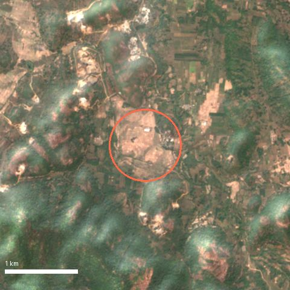
8. Kuli
score 75.4 (50 km model)
+ 80% cropland, 7 km from Rayagada; major road 0.3 km
− Small zone; longest drive from Nilabadi (≈67 km, ≈71 min) because the road network goes round the hills
Sentinel-2 L2A, 2026-01-26.
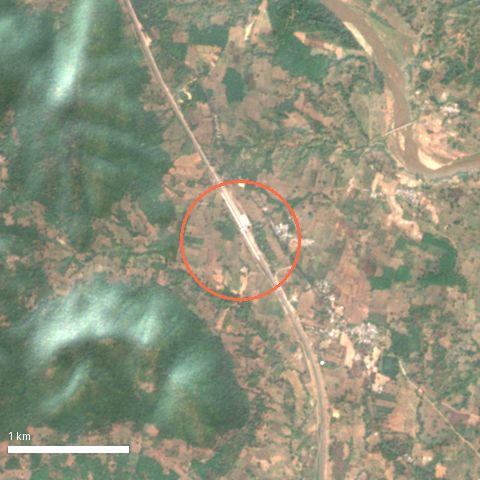
9. Kandhajimidi
score 75.0 (50 km model)
+ Jimidipeta station 0.1 km; closest Rayagada-side zone to Nilabadi in straight line (18.6 km)
− Slow roads (≈42 km, ≈64 min drive); 14 km to a major town; small zone (≈36 ha)
Sentinel-2 L2A, 2026-01-26.
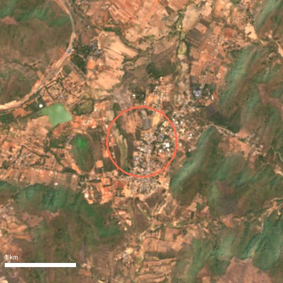
10. Lakshmipur
score 74.0 (50 km model)
+ Lakshmipur block HQ 0.6 km; Lakshmipur Road station 1.6 km; closest zone to Nilabadi (17 km W)
− Far from any large town (≈38 km); steeper (3.5°); small zone (≈31 ha)
Plot track: price and rent context near Nilabadi (general, sourced)
These are general reference points gathered in Sep–Oct 2026. They are not valuations, and nothing here is a quote for any zone.
Neelabadi mouza (Bandhugaon SRO), homestead (gharabari) land: the government benchmark value is about ₹8,855 per decimal. Recorded sale values in 2026 ran about ₹20,000–59,300 per decimal. Source: IGR Odisha, View Fee Value (queried 1 Oct 2026).
Parvathipuram (AP), house sites: one asking price of about ₹4.4 lakh per decimal (Sep 2026). Source: OLX Parvathipuram.
Rents: a 2BHK in Rayagada was listed at about ₹5,500–10,000 a month, and in Jeypore at about ₹7,600–10,500. Sources: a Reeltor Rayagada rental listing, other Rayagada rental listings seen in Sep 2026 (some have since expired) and Reeltor Koraput-district listings. Rental demand in villages is thin and unproven, so treat town rents as an upper bound.
Listings change or expire, so re-check them before relying on any figure.
Track 2
Apartment: localities in and around Visakhapatnam
Twenty-two Vizag localities, plus Vizianagaram and Srikakulam towns as separate markets, were scored on the factors below. Locality centres are approximate (OSM place points, rounded to 3 decimals). The score compares locations. It says nothing about any building or project.
Top 12 Visakhapatnam localities
#
Locality
Score
Approx. centre
To centre km
NH16 corridor km
BRTS km
Nearest job hub
Hospitals / schools ≤3 km (OSM)
Nearest station
Airport km
Coast km
1
Akkayyapalem
85.8
17.738, 83.299
1.8
0.2
2.0
Port & HPCL refinery 7.6 km
89 / 53
Visakhapatnam 2.1 km
35.0
3.3
2
Seethammadhara
84.8
17.745, 83.306
2.3
0.6
1.9
Port & HPCL refinery 8.7 km
95 / 56
Visakhapatnam 3.1 km
33.9
3.8
3
Dwaraka Nagar
83.7
17.729, 83.309
0.6
0.8
2.4
Port & HPCL refinery 7.9 km
139 / 77
Visakhapatnam 2.1 km
35.1
2.1
4
Arilova
81.7
17.768, 83.308
4.9
2.9
0.2
Rushikonda IT hills 9.4 km
35 / 11
Visakhapatnam 5.5 km
31.9
5.0
5
Marripalem
80.7
17.741, 83.248
6.5
0.7
0.0
Port & HPCL refinery 5.2 km
12 / 23
Marripalem 0.7 km
38.5
3.5
6
Gopalapatnam
79.5
17.748, 83.220
9.6
1.6
0.0
Port & HPCL refinery 6.5 km
14 / 17
Simhachalam 0.4 km
40.3
6.1
7
MVP Colony
78.8
17.742, 83.336
3.7
0.7
1.5
Rushikonda IT hills 8.6 km
42 / 51
Visakhapatnam 5.3 km
32.2
1.0
8
Gajuwaka
77.0
17.681, 83.213
11.0
0.9
7.0
Port & HPCL refinery 3.6 km
35 / 13
Gopalapatnam 6.9 km
45.8
5.9
9
Yendada
72.4
17.783, 83.358
8.5
0.0
4.1
Rushikonda IT hills 3.8 km
7 / 13
Visakhapatnam 9.9 km
27.2
2.3
10
PM Palem
67.1
17.802, 83.349
9.7
0.2
5.4
Rushikonda IT hills 4.2 km
8 / 15
Visakhapatnam 10.8 km
26.2
4.2
11
Madhurawada
66.5
17.810, 83.354
10.8
0.0
6.5
Rushikonda IT hills 3.8 km
9 / 19
Visakhapatnam 11.9 km
25.2
4.3
12
Pendurthi
66.2
17.821, 83.207
15.2
0.5
0.0
Port & HPCL refinery 14.6 km
13 / 8
Pendurthi 1.4 km
37.0
13.6
Other cities in the ellipse
These are scored against their own town centre, so their score is not directly comparable with the Vizag list.
#
Locality
Score
Approx. centre
To own town centre km
NH16 corridor km
BRTS km
Nearest job hub
Hospitals / schools ≤3 km (OSM)
Nearest station
Airport km
Coast km
—
Vizianagaram (town)
67.5
18.114, 83.411
0.0
12.7
—
Divi's Labs, Chippada 20.7 km
48 / 25
Vizianagaram Junction 1.6 km
18.9
20.2
—
Srikakulam (town)
60.9
18.295, 83.894
0.0
2.3
—
Divi's Labs, Chippada 58.9 km
58 / 31
Dusi 9.1 km
53.3
10.2
Notes on each locality
1. Akkayyapalem (85.8). + Central: 1.8 km from the RTC Complex, on the old NH16 road, near BRTS; the densest hospital and school cover in OSM. − 3.3 km from the sea (APSDMA 2–5 km band); older, dense housing stock and traffic.
2. Seethammadhara (84.8). + Central and on higher ground; dense hospitals and schools; on the old NH16 road. − Among the most expensive localities; 3.8 km from the coast.
3. Dwaraka Nagar (83.7). + The city centre itself: RTC Complex, the railway station 2 km away, the most services in OSM. − 2.1 km from the sea (2–5 km cyclone band); congestion and high prices.
4. Arilova (81.7). + On the BRTS corridor, 4.9 km from the centre, on higher ground near Kambalakonda. − Hill edge, so some slopes; 9 km to the nearest large job hub.
5. Marripalem (80.7). + On the BRTS corridor near the old NH16 road, 0.7 km from Marripalem station. − Next to the naval air station (INS Dega) and the NAD junction traffic.
6. Gopalapatnam (79.5). + On BRTS, 0.4 km from Simhachalam station, 6.5 km from the port and refinery jobs. − 9.6 km from the centre; close to the refinery and industrial belt.
7. MVP Colony (78.8). + Planned colony 3.7 km from the centre, near the beach road. − Only about 1 km from the sea (APSDMA 0–2 km band), so the highest cyclone exposure in the list; premium prices.
8. Gajuwaka (77.0). + Closest to the steel plant, port and refinery jobs (3.6 km); on the old NH16 road; the lowest sourced prices. − Reported flooding in low-lying colonies (Aug 2025); industrial air; 11 km from the centre. Low-lying colonies in Gajuwaka were under up to 3 ft of water in the August 2025 rains (The Hindu, 17 Aug 2025).
9. Yendada (72.4). + On NH16, 3.8 km from the Rushikonda IT hills, near the beach road. − 2.3 km from the coast (2–5 km band).
10. PM Palem (67.1). + On NH16, near the cricket stadium and the IT hills; mid-range prices. − 9.7 km from the centre; few mapped hospitals in OSM.
11. Madhurawada (66.5). + On NH16, 3.8 km from the IT hills, the largest supply of newer apartments. − Drainage still being built (see below); 10.8 km from the centre. Madhurawada has no underground drainage yet and floods in heavy rain; the Centre approved a ₹658.61 crore underground drainage scheme for it in May 2026 (The Hindu). Residents still reported poor drains in Oct 2026 (The Hindu).
12. Pendurthi (66.2). + On BRTS, 1.4 km from Pendurthi station; the lowest prices in the list. − 15 km from the centre and 15 km from the main job hubs; some low ground (JRC water nearby).
Vizianagaram (town) (67.5). + Own district market: Vizianagaram Junction 1.6 km, Bhogapuram airport 19 km, 20 km from the coast. − Farther from NH16 and from the Vizag job hubs; many tanks nearby (JRC water within 600 m).
Srikakulam (town) (60.9). + Own district market, 10 km from the coast, NH16 2.3 km. − Farther from rail (Srikakulam Road is at Amadalavalasa) and from job hubs; Nagavali river flooding needs checking.
Price and rent context (general, sourced)
Flat rates are the MagicBricks locality range for Jul–Sep 2026 (MagicBricks Visakhapatnam property rates). 2BHK asking prices and rents come from MagicBricks listing pages captured on 19 Oct 2026. Gross yield is annual rent divided by price, before costs. These are general reference points, not valuations. Localities without sourced figures are left out.
Search the project on AP RERA (rera.ap.gov.in). Confirm the registration number, the promoter, the approved plan, the promised completion date and the latest quarterly progress update.
Check for complaints, orders or extensions listed against the project on the RERA portal.
Match the carpet area in the agreement with the RERA filing. Check the GVMC or VMRDA building permission and, for a finished building, the occupancy certificate.
Within about 500 m of the sea, ask for CRZ clearance. In low-lying areas, ask about past waterlogging and check the stilt and drainage levels.
Method
How the scores work
Grid
UTM zone 44N (EPSG:32644), 250 m cells, 1,288,544 cells in a 268 × 300.5 km box, clipped to the ellipse and the land. Slope comes from Copernicus DEM GLO-30 resampled to 50 m. Land-cover fractions are aggregated from 10 m ESA WorldCover, and JRC water occurrence from 30 m. Each factor is scaled from 0 to 1 with linear ramps; the weights add up to 100.
Plot track weights
Factor
Weight
Full marks → zero
Gentle slope
14
≤3° → 8°
Road access (OSM)
16
60%: trunk, primary or secondary road 1 → 5 km; 40%: any road 0.25 → 1.5 km
Town access
16
The best of: city (Visakhapatnam, Vizianagaram, Srikakulam, Berhampur) 5 → 40 km; 0.75 × town (Rayagada, Parvathipuram, Bobbili, Anakapalli, Palasa-Kasibugga, Tekkali, Rajam, Salur, Narsipatnam, Koraput, Paralakhemundi, Gunupur) 3 → 20 km; 0.5 × any other OSM town 2 → 10 km
Demand and jobs
16
Nearest city or industrial hub, 5 → 40 km. Hubs: Visakhapatnam Steel Plant, Jawaharlal Nehru Pharma City, Parawada, Brandix / APSEZ, Atchutapuram, Rushikonda IT hills, Port & HPCL refinery area, Simhadri thermal / NTPC, Nakkapalli port & industrial area, Bhogapuram airport (VTZ), NALCO refinery, Damanjodi, Utkal Alumina, Steel Exchange India, Divi's Laboratories, JK Paper, Jaykaypur
Existing settlement (WorldCover built-up within about 500 m)
6
0 → saturates at 12% built
School and health facility (OSM)
8
School 1.5 → 10 km; health facility 2 → 12 km
Railway station (OSM)
8
4 → 25 km
Near either focus
8
Nearer of Nilabadi or the Vizag centre, 10 → 100 km
Penalties
Flood: −10 for cells next to mapped water, tapering to 0 between 250 and 500 m; −5 more for low ground (within 3 m of the lowest point in a 2.25 km window) within 1 km of water.
Cyclone proxy: −12 within 2 km of the coastline, −8 at 2–5 km, tapering to 0 at 15 km. The 0–2 and 2–5 km bands follow the APSDMA classification of coastal villages vulnerable to cyclones and storm surge.
Storm-surge proxy: −6 where the ground is below 5 m and within 10 km of the coast. IMD gives a probable maximum surge of about 4 m for the Srikakulam and Visakhapatnam coasts.
Exclusions (on land inside the ellipse; rules overlap)
Slope over 8°: 19,933 km²
Tree cover over 50% of the cell: 21,922 km²
Inside a forest block (over 60% tree cover within about 600 m): 17,507 km²
No road within 2 km: 1,806 km²
JRC surface-water occurrence over 5%: 1,224 km²
Water or wetland over 20% of the cell: 938 km²
CRZ proxy: land within 500 m of the OSM coastline: 208 km²
Dense built-up core (over 50% built): 336 km²
Picking zones
The score was smoothed over about 1.25 km, keeping only cells where most neighbours were valid. Peaks were picked greedily, at least 15 km apart, and the top 15 kept. Each zone is named after the nearest OSM place. Mandal and district come from Nominatim reverse geocoding.
Apartment track weights
Factor
Weight
Full marks → zero
Distance to the city centre (RTC Complex; own centre for the two towns)
18
2 → 20 km
NH16 corridor or BRTS
12
Best of NH16 0.5 → 5 km and BRTS 0.5 → 4 km. In OSM, the NH16 number now sits on the bypass; the city road is tagged "Old NH16 Road" and counted too.
Job hubs (IT hills, port and refinery, steel plant, Pharma City, MedTech Zone, Atchutapuram, Simhadri, Divi's)
18
Nearest hub 2 → 20 km (70%), second hub 5 → 25 km (30%)
Hospitals and schools within 3 km (OSM)
14
15 hospitals or clinics and 10 schools = full marks
Rail
8
Nearest station 1 → 8 km, plus Visakhapatnam Junction 3 → 25 km
Distance to coast 1 → 8 km (60%); not below 5 m within 10 km of the coast (40%)
Low-lying ground and waterlogging
12
Minus for: within 3 m of the local low point; JRC water over 5% within about 600 m; ground below 8 m
Before you act
Caveats and checks
This is a desk study
Satellite and map data cannot see title, land category, tribal-land rules, encroachment, local drainage or a builder's record. Use the results only to decide where to look.
CRZ is a proxy. We excluded land within 500 m of the OSM coastline. The legal CRZ line is set from the High Tide Line in the approved Coastal Zone Management Plan (CRZ Notification 2019), and it also applies along tidal creeks and backwaters, which this proxy misses. Check the CZMP map for any coastal site.
Cyclones and storm surge. The proxies are simple distance and height bands, not a hazard model. Cyclone Hudhud (2014) hit Visakhapatnam directly. Build to the wind zone (Vb = 50 m/s) and ask locally about past surge and flooding.
Scheduled Areas. Koraput and Rayagada are fully Scheduled, and Odisha Regulation 2 of 1956 voids a transfer from a Scheduled Tribe member to a non-ST person. In Andhra Pradesh, Scheduled Areas are notified village by village inside the ITDA mandals, and the AP Land Transfer Regulation (1/70) applies there. Some villages outside the listed mandals are also Scheduled or under review, so confirm the status of the exact village with the revenue office.
Two states, two systems. Odisha (Bhulekh, Tahasil) and Andhra Pradesh (Meebhoomi, MRO office) have different land records, registration, stamp duty and building rules. In the Vizag region, VMRDA and GVMC planning rules also apply.
Elevation is a surface model. Copernicus GLO-30 includes buildings and trees, so city elevations read high and low-lying flags in dense areas are rough. Distances are measured on a 250 m grid (about ±125 m).
OSM coverage is uneven. Hospitals, schools and job hubs are mapped better in Vizag than in the hills. Hub points were placed by hand at well-known sites and are approximate.
Prices. Listing prices are asking prices, not sale values, and they change fast. Re-check before relying on any figure.
Industrial areas. Near the steel plant, refinery, Pharma City and the alumina refineries, check air quality, effluent and heavy traffic.
Data sources
Sources and dates
Elevation:Copernicus DEM GLO-30, via Microsoft Planetary Computer (accessed 31 Oct 2026).
Imagery:Copernicus Sentinel-2 L2A: a dry-season median for Nov 2025 – Mar 2026 (some cloud gaps remain), with single scenes for the thumbnails.
Roads, BRTS, industrial areas, aerodromes:OpenStreetMap extracts for Andhra Pradesh and Odisha from download.openstreetmap.fr (31 Oct 2026), used because the Overpass servers were too busy. 121,203 road ways, 45 BRTS ways.
Places, stations, schools, health facilities, coastline: OpenStreetMap via the Overpass API, 31 Oct 2026 (146 stations, 731 schools, 1766 health facilities).
Apartment prices and rents:MagicBricks Visakhapatnam property rates (Jul–Sep 2026) and MagicBricks 2BHK sale and rent listing pages for each locality (captured 19 Oct 2026, linked in the table).
Not used: official forest and CRZ boundaries (no open layer available), and VIIRS night lights.